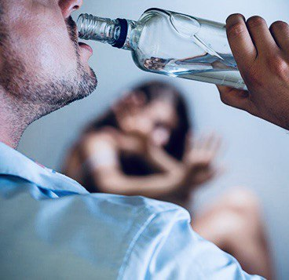

+380(97) 369 76
65
+380(97) 369 76
65Лечение алкоголизма в Одессе
Сделайте первый шаг в новую жизнь уже сегодня!
Работаем в Одессе, Киеве, Львове, Харькове, Днепре, Запорожье, Черноморске, Каменском


Бесплатная консультация, работаем круглосуточно 24/7
Сделайте первый шаг в новую жизнь уже сегодня!
Работаем в Одессе, Киеве, Львове, Харькове, Днепре, Запорожье, Черноморске, Каменском
Алкоголизм - это хроническое постоянно прогрессирующее наркологическое заболевание которое в конечном итоге приводит к тяжелым поражением всех органов и систем а так же психиатрическим расстройствам с полной потерей своей личности , тяжелой деградации , поражением центральной нервной системы с вполне вероятным развитием эпилептической болезни.
Лечением алкоголизма занимается врач нарколог, а так же смежные специалисты которые помогут обеспечить полное восстановление пациента с помощью детоксикационной капельницы, кодирования от алкоголизма и психотерапии. Капельница от алкоголя поможет вывести из запоя на дому или в стационаре зависимого пациента , а так же снимет тягу тем самым остановит бесконтрольный прием спиртных напитков. Лечение алкоголизма в Одессе - это комплексная работа которой занимаются врачи наркологи с целью создания у пациента стойкой мотивации к выздоровлению а так же помогут сформировать полное отвращение к спиртным напиткам не только на физическом но и на психологическом уровне.
К основным признакам алкоголизма можно отнести:
На сегодняшний день описано три основных стадии алкоголизма:
1.Первая стадия алкоголизма - характеризуется увеличением объема и частоты употребления.
2.Физическая зависимость от спиртных напитков. Очень важно отметить на второй стадии алкоголизма появляются первые запои.
3. Третья стадия - это полная деградация , постоянное желание выпивать , утро начинается с выпивки.
Аморальное и асоциальное поведение.
Потеря критики к своим действиям.
Сильное снижение интеллектуальных способностей.
Сильная деградация вплоть до потери навыков себя обслуживать.
Отсутствие какого либо социального контроля.
Тяжелые хронические заболевания вызванные токсическим эффектом спирта.
Очень важно при лечении любой стадии алкоголизма это мягкое снятие абстинентного синдрома на первых этапах вывода из запоя или длительной интоксикации спиртным. Добиться высокой эффективности в лечении алкоголизма помогает большой опыт и высокая квалификация врачей наркологов медицинской службы UmbrellaPlus “Безопасная наркология”. Стоит понимать что для эффективного лечения алкоголизма важно пройти три основных этапа выздоровления :
1.Вывод из запоя на дому или в стационаре. ( Капельница от алкоголя Одесса)
2.Кодирование от алкоголизма одним из трех вариантов ( Кодирование от алкоголизма Уколом, кодирование от алкоголизма с помощью подшивки от алкоголя, кодирование по методу Довженко ).
3.Психотерапия и реабилитация зависимого.
После прохождения всех трех этапов в лечении алкоголизма в Одессе мы гарантируем длительную ремиссию и возвращение зависимого человека к нормальной трезвой жизни.
Стоимость лечения алкоголизма в Одессе начинается от 1499грн.
| Услуга | Цена |
|---|---|
| Лечение алкоголизма Одесса | От 1499 грн |
| Вывод из запоя Одесса | От 1499 грн |
| Вывод из запоя на дому Одесса | От 1699 грн |
| Капельница от алкоголя Одесса | От 1499 грн |
| Капельница от алкоголя на дому Одесса | От 1699 грн |
| Лечение пивного алкоголизма Одесса | От 1499 грн |
| Лечение женского алкоголизма Одесса | От 1499 грн |
| Кодирование от алкоголизма Одесса | От 3999 грн |
| Кодирование уколом Одесса | От 3999 грн |
| Кодирование от алкоголизма уколом Дисульфирам | От 3999 грн |
| Кодирование от алкоголизма уколом Эспераль | От 5500 грн |
| Подшивка от алкоголя Одесса | От 9999 грн |
| Кодирование по методу Довженко Одесса | От 14999 грн |
Лечением алкозависимых в городе Одесса занимаются врачи наркологи медицинского центра UmbrellaPlus “Безопасная наркология” номер телефона 050-021-69-57. Лечение зависимых на алкоголизма должно подбираться индивидуально и быть комплексным для каждого больного. Основным моментом в лечении алкогольной зависимости является снятие алкогольной интоксикации с помощью капельницы от алкоголя с последующим кодированием от алкоголизма и длительной психотерапии для работы с ложными убеждениями и формированием стойкого отвращения к любым спиртным напиткам на психическом и физическом уровне.
Что бы вылечить алкогольную зависимость в Одессе вам нужно обратиться в медицинскую службу UmbrellaPlus “Безопасная наркология” номер телефона 050-021-69-57. Каждому пациенту нужно донести что зависимость которая напивалась годами а иногда и десятилетиями не пройдут за один сеанс капельниц или одну кодировку. Лечение самой зависимости а не ее симптомов занимает длительно время , в лечении алкоголизма всегда входит детоксикационная терапия , курс капельниц от алкоголя, кодирование от алкоголизма а так же длительная психотерапия , только так можно достигнуть пожизненной ремиссии и остановить пьянство.
Лечением алкоголизма в Одессе занимаются частные наркологические центры , кабинеты и клиники , а так же городская психиатрическая больница на улице Воробьева. Мы предлагаем качественное анонимное лечение алкоголизма в Одессе в медицинской службе UmbrellaPlus “Безопасная наркология” что бы получить консультацию врача нарколога в Одессе и начать лечить алкоголизма позвоните по номеру 050-021-69-57.
На сегодняшний день в Украине запрещено принудительное лечение какого либо заболевания если оно не угрожает жизни больного. Любое лечение алкоголизма в Одессе всегда ДОБРОВОЛЬНОЕ. Против воли пациента никакая клиника лечить его не будет.
Мы уже много лет занимаемся лечением алкогольной зависимости в Одессе и может гарантировать высококвалифицированную медицинскую помощь с длительной ремиссией пациента. Что бы получить консультацию или выйти из запоя позвоните по номеру 050-021-69-57.
Женский алкоголизм - это всегда хроническое прогрессирующее заболевания характеризующееся утратой контроля над выпивкой с формированием запоев, а так же желанием опохмеления по утрам. Женский алкоголизм отличается от мужского имея свои особенности и отличия. Что бы вылечить женский алкоголизм нужно обратиться к наркологу города Одессы и получить квалифицированное лечение с детоксикационной терапией , капельницами от алкоголя и психологической помощью суть которой заключается в снятии алкогольной интоксикации и психологической работе с ложными убеждениями
Капельница от алкоголизма - это собирательный термин который обозначает детоксикационную инфузионную терапию направленную на снятия любой сложности алкогольной интоксикации , нормализации физического и психологического состояния пациента а так же купированием патологической тяги к спиртным напиткам. Капельница от алкоголя имеет индивидуальный состав для каждого пациента и назначается врачом наркологом в случаях когда было принято слишком большое количество спиртного или при состояниях острой или хронической интоксикации.
Самым эффективным методом в лечении алкогольной зависимости считается прохождения трехэтапного курса медикаментозного и психологического лечения зависимого человека. Медицинская служба UmbrellaPlus “Безопасная наркология” занимается лечением алкоголизма в Одессе уже более 5 лет и имеет опыт работы даже с самыми тяжелыми формами алкоголизма. На сегодняшний день к самому эффективному методу кодирования мы можем отнести - курс капельниц от алкоголя , кодирование от алкоголизма а так же психологическую работу над ложными убеждениями больного.
Укол от алкоголизма - это один из основных методов кодирования от алкогольной зависимости суть которого заключается в ведении пациенту дисульфирамо-подобного вещества для медикаментозного лечения зависимости с формированием отвращения к любым спиртным напиткам на физическом и психологическом уровне. На сегодняшний день укол от алкоголизма в Одессе имеют два варианта - классический дисульфирам или его вариация горячий укол от алкоголизма Еспираль.
Пивной алкоголизм большая проблема города Одесса , пивной алкоголизма постоянно прогрессирующее заболевания с большим ростом толерантности к спиртным напиткам. Прием пива зависимого человека за день может достигать 10-12 литров и иметь ежедневный характер употребления спиртного. Лечением пивного алкоголизма в Одессе занимаются врачи наркологи UmbrellaPlus “Безопасная наркология”. Мы имеем хороший процент выздоровления зависимых людей а так же большой опыт в сфере наркологии. Что бы проконсультироваться с врачом наркологом позвоните по номеру 050-021-69-57.
Кодирование от алкоголизма - является комплексное врачебное вмешательство которое с помощью медикаментозной и психологической терапии влияет на основной аспект зависимого человека с целью формирования пожизненной трезвости и стойкого отвращения к любому спиртному напитку. Кодирование от алкоголизма требует не только высокой квалификации врача нарколога но и сильной мотивации и желание остановить бесконтрольное пьянство самого зависимого человека , в случаях когда мотивации нет - задача врача нарколога создать почву в психике пациента для абсолютной трезвости в будущем. Что бы закодироваться в Одессе позвоните по номеру 050-021-69-57.
Анонимно

"Ну в хлопців просто золоті руки й світла голова, мене капали Олексій та Владислав, буквально за декілька сеансів я наче заново народився, до цього пив більше 3х тижнів, не міг зупинитись, дуже радий що знайшов саме цих спеціалістів, всім рекомендую"
Анонимно
"В течение нескольких лет я злоупотреблял алкоголь, что привело к увольнению с работы и вызвало у меня мысли о суициде. Понимая, что такой образ жизни неприемлем, я обратился за помощью в клинику "Амбрела". Здесь я смог преодолеть свою зависимость от спиртного благодаря заботливым и опытным врачам, а также эффективной системе лечения. Спустя более года я полностью избавился от желания употреблять алкоголь, и теперь моя жизнь вернулась в норму. Я даже не приближаюсь к спиртному! Благодарю врачей клиники "Амбрела" за их помощь и заботу."
Анонимно
"Я обращался за помощью в различные клиники, пытаясь избавиться от своей зависимости от алкоголя, но без особых успехов. Никак не мог справиться с желанием прибегнуть к бутылке, пока друг не посоветовал мне обратиться в центр "Амбрелла". Я записался на прием и был поражен заботливым отношением к пациентам. Уже прошло два года, и теперь я смотрю на алкоголь с абсолютной равнодушием, активно занимаюсь спортом и улучшил отношения в семье. Благодаря центру "Амбрелла" моя жизнь была спасена от алкогольной зависимости!"
Анонимно

"Хочу выразить свою благодарность врачам из центра алкоголизма "Амбрела" за то, что они буквально спасли мою жизнь. В течение последнего года я сильно увлекался питьем, и все это привело к катастрофическим последствиям. Хотя я ходил на терапевтические сеансы, но безрезультатно. Тогда я нашел адрес клиники "Амбрела" в интернете, изучил отзывы и информацию о центре, и записался на прием. Там мне сразу предложили методику лечения, которая помогла не только справиться с физической ломкой, но и психической зависимостью от алкоголя. Не буду распространяться, скажу только одно - после пребывания в этой клинике я стал другим человеком, и навсегда забыл, что такое привкус алкоголя. Больше меня не тянет на это! Я искренне верю, что в центре "Амбрела" трудятся настоящие целители душ!"
Анонимно
"После сложного развода мой сын начал подавлять свою обиду и горе употреблением алкоголя. Он старался скрывать это от меня, но я, как мать, почувствовала, что что-то не так. В конечном итоге, ситуация стала критической. Моя знакомая посоветовала мне обратиться в клинику "Амбрела". Я была приятно удивлена их работой! Они помогли сыну преодолеть очередной период злоупотребления алкоголем, и с тех пор прошел уже более года, и он совсем не пьет."
Анонимно
"Благодаря вашей помощи, моя семья была спасена. Я с трудом уговорила мужа начать лечение, и последний каплей был пьяное ДТП. К счастью, в аварии никто не пострадал, но это был для него сигнал к действию. Он наконец согласился пройти курс лечения на дому, в стационар не хотел ложиться. Лечение было трудным, и были моменты, когда срыв был настолько близок, но благодаря вашему центру Амбрелла мы справились с этим."
Анонимно
"Для меня эта клиника стала настоящим спасением! Долгое время я упорно отказывался от лечения, уверен был, что со мной все в порядке. Но к счастью, семья уговорила меня попробовать. И сегодня я чувствую себя невероятно счастливым, осознавая, что мне абсолютно не нужен алкоголь. Огромное спасибо за помощь и поддержку, которые я получил здесь! Я благодарен вам за новую возможность жить полноценной и счастливой жизнью!"
Анонимно
"Выражаю благодарность ребятам, которые оказали мне помощь и не отвернулись. Уже 10 месяцев я остаюсь чистой. Благодарю за то, что помогли найти новый путь в моей жизни."
Приезд в течении 60 минут от момента поступления заявки
Наши филиалы есть во всех больших городах Украины.
Мы оказываем профессиональную доказательную медицинскую помощь. Гарантией является наше имя.
Номер телефона:
+380 (97) 369 76 65
+380 (50) 021 69 57
Адрес главного офиса: г. Харьков ул. Сумская 47
Офис вашего города нужно уточнить
Работаем в: Одессе, Киеве, Львове, Харькове, Днепре,
Запорожье
Telegram: t.me/umbrellaplus
График работы: Круглосуточно